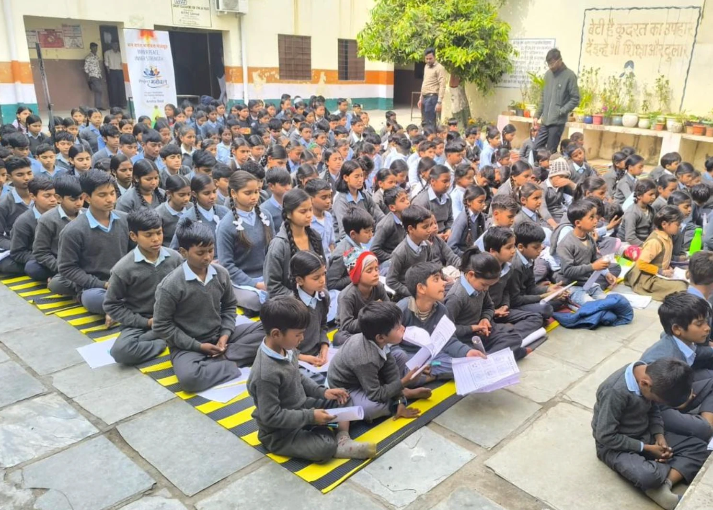
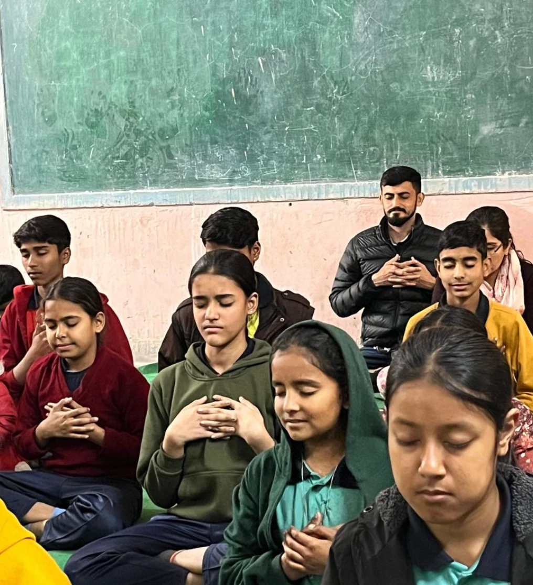
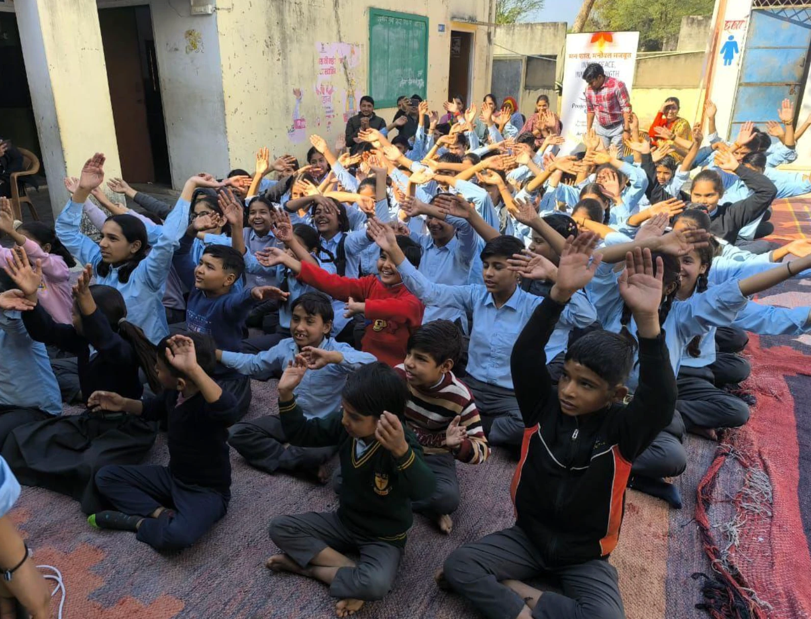
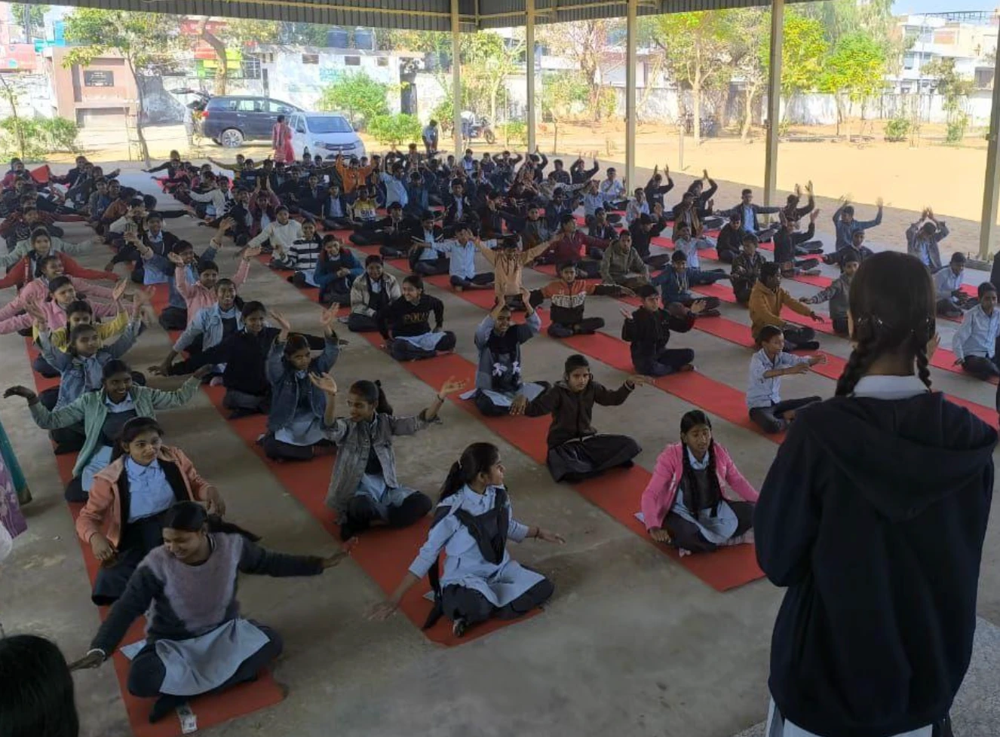
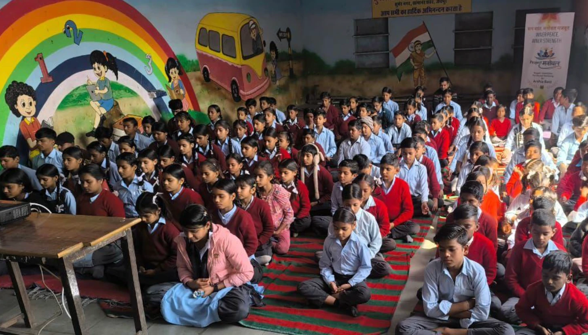
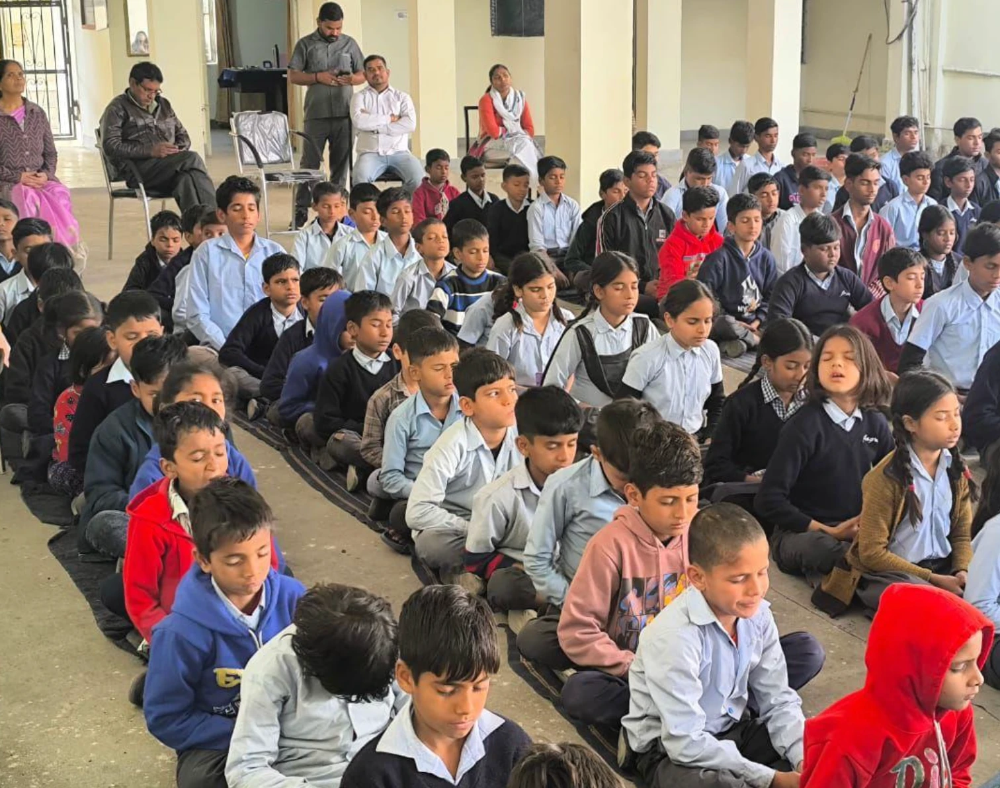

Project Manobal
Peer-led mindfulness for children and teenagers under extreme pressure: students preparing for competitive exams in Kota's coaching centres, and children affected by trafficking and abuse. We also brought it to older people living in abandoned old-age homes.
- Role
- Founder
- Who
- Children and teens first; older people in old-age homes
- Partners
- Pyramid Valley Foundation · Shreans Daga Foundation
- Where
- Delhi · Haryana · Uttarakhand · Rajasthan · Uttar Pradesh
- Recognition
- Ministry of Education

A school-wide session. The banner reads "Inner peace, inner strength".
Why I started
I started Manobal after a student died by suicide in Jaipur. It made me ask why conversations about mental health so often begin only after something has gone wrong.
I've felt academic pressure myself, and I know how easily stress becomes normal among students, even when they're struggling to cope.
The programme
Sessions teach practical ways to handle anxiety, academic pressure and difficult emotions. Working with volunteers and partner foundations, I helped design them around four things:
Guided mindfulness
Short practices students can repeat on their own.
Breathing
Simple tools for the moment stress arrives.
Naming emotions
Learning to notice what you feel and put words to it.
Open conversation
Room to talk about stress without being judged.
Who we worked with
- Students under exam pressure. Many were preparing for India's competitive entrance exams, including at the coaching centres of Kota, where the pressure on teenagers is intense.
- Children affected by trafficking and abuse. Through shelters and support organisations, often with young people who had rarely been asked how they felt.
- Children in orphanages and vulnerable communities.
- Older people in abandoned old-age homes. We mainly worked with children and teenagers, but loneliness doesn't stop at a certain age.
Adapting the sessions
Some participants were ready to talk straight away. Others needed time to trust us first. That taught me mindfulness can't be delivered from one rigid script.






Helping someone doesn't always mean giving advice. Sometimes it means making a space where they feel safe saying something they've kept to themselves.
Manobal has made me more attentive to people whose lives look very different from mine.